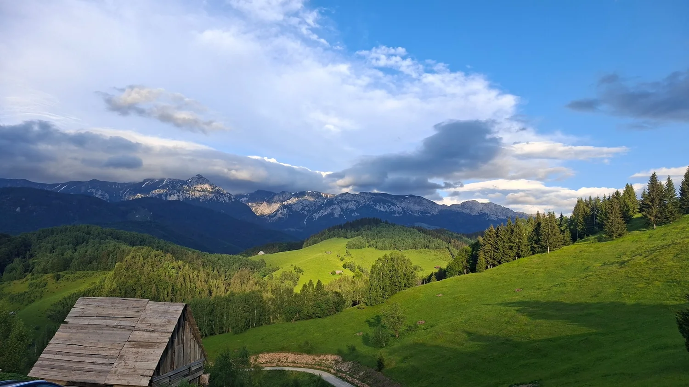
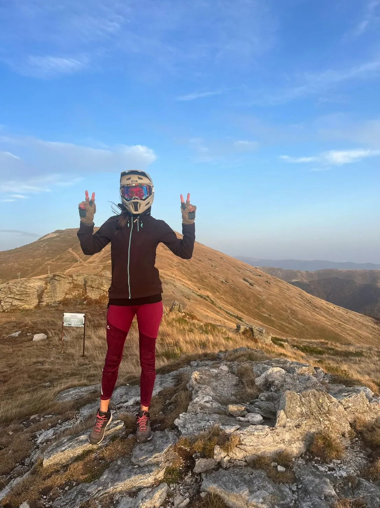
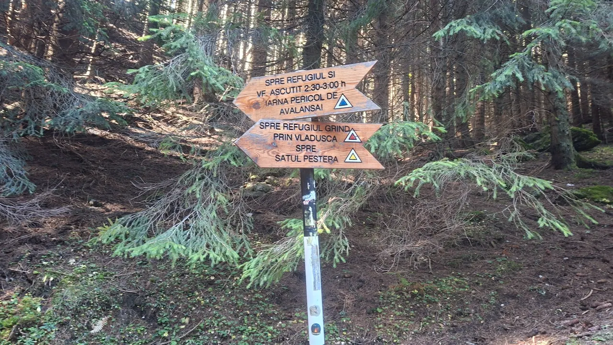
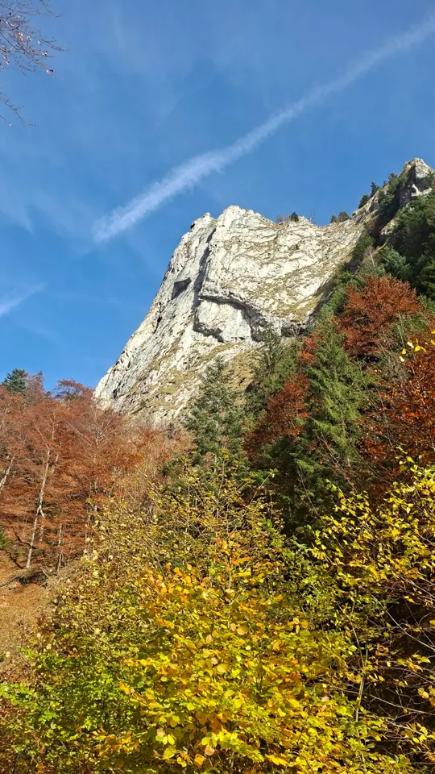
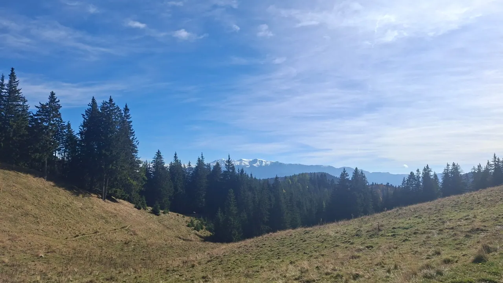
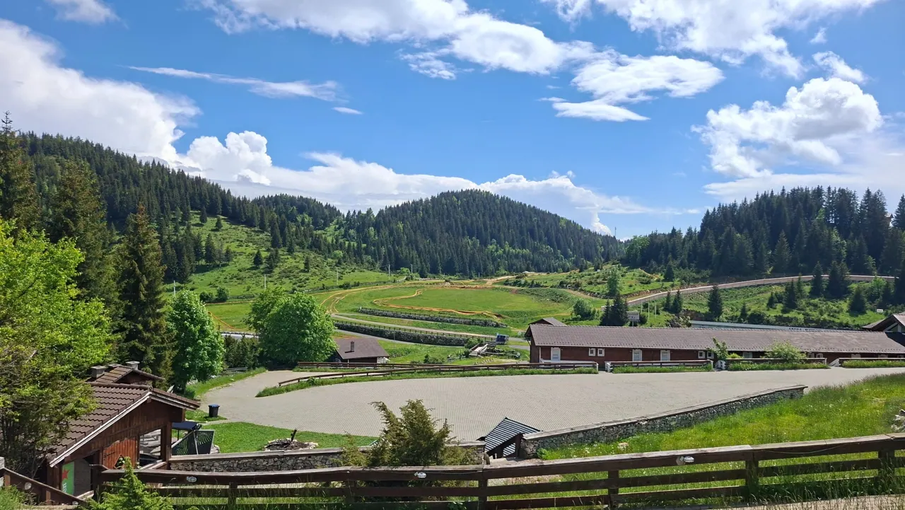
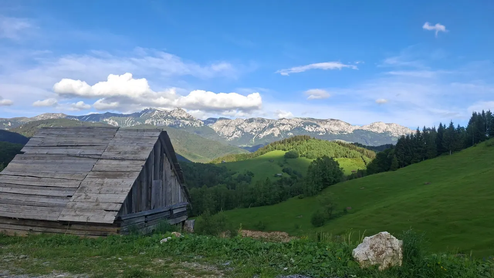
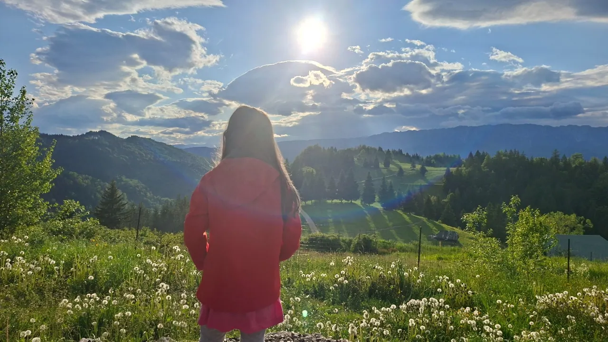
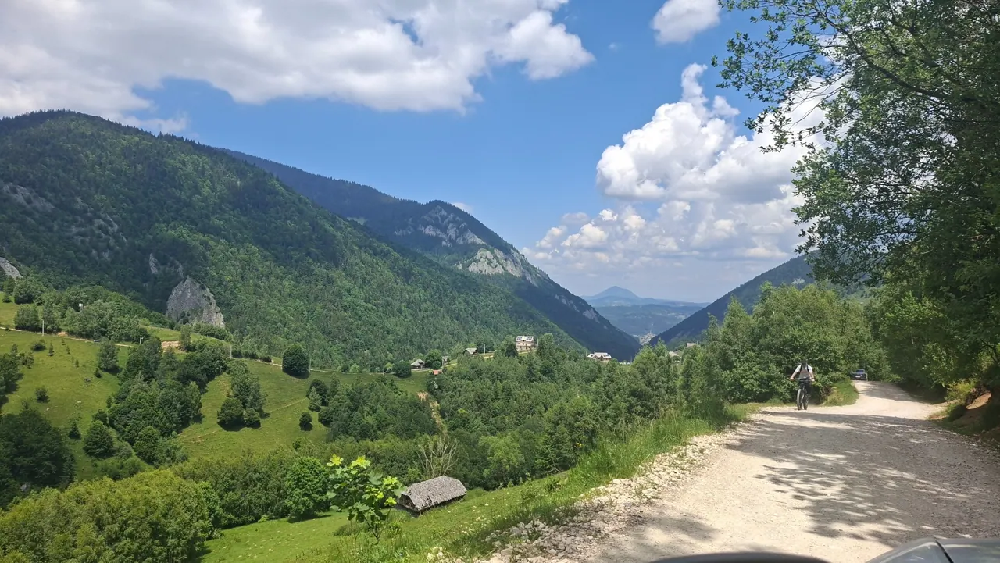
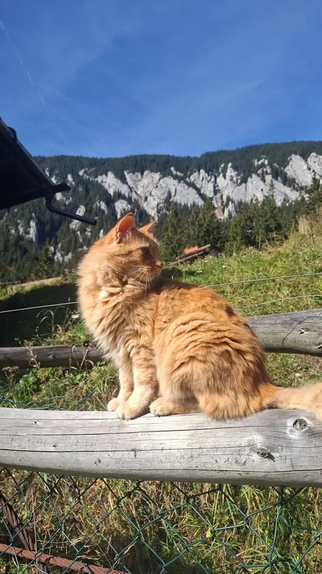

Galería de fotos
Algunos momentos del camino. Selecciona una foto para verla de cerca.

La Transilvania escondida Paisajes rurales
Paisajes rurales Rutas panorámicas en coche
Rutas panorámicas en coche Sobre dos ruedas
Sobre dos ruedas Al caer la tarde
Al caer la tarde En el sendero
En el sendero Castillo de Bran
Castillo de Bran Desfiladero de Zărnești
Desfiladero de Zărnești Paseos a caballo
Paseos a caballo
Aventuras en bici eléctrica A la mesa
A la mesa Caminos de montaña
Caminos de montaña Desde mi cámara
Desde mi cámara
Desde mi cámara Desde mi cámara
Desde mi cámara
Desde mi cámara
Desde mi cámara Desde mi cámara
Desde mi cámara
Desde mi cámara
Desde mi cámara
Desde mi cámara
Desde mi cámara Desde mi cámara
Desde mi cámara Desde mi cámara
Desde mi cámara Desde mi cámara
Desde mi cámara
Desde mi cámara